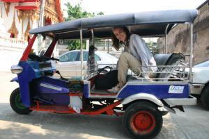
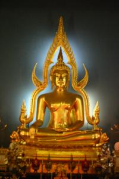

Le 25 décembre 2004,
Michael et moi decidons qu’il est temps de sortir de cette rue un peu trop touristique pour nous et d’aller visiter le centre ville... En chemin, nous rencontrons un Thailandais qui parle un peu francais vu que son pere est laotien et qui nous explique que les principaux temples du centre sont fermes a cause de grandes ceremonies celebres par des moines, qui ont lieu a l’interieur de ces edifices a l’occasion de Noel. Il nous propose un autre parcours a faire en tuk-tuk pour une somme modique qu’il negocie meme pour nous ! Il precise bien au chauffeur de nous attendre a chaque arret et que nous ne paierons qu’a la fin du trajet. Il nous apprend meme quelques mots en thailandais pour que nous puissions nous debrouiller etant donne que l’anglais n’est pas le point fort des Thailandais (contrairement aux Indiens qui se debrouillaient tous tres bien, mieux que nous meme !). Il est bien gentil ce bonhomme.
 Nous voila partis en tuk-tuk visiter les temples bouddhistes plus beaux les uns que les autres. L’interieur est incroyablement decore avec, tronant generalement au milieu de la piece, un bouddha dore. Nous passons inevitablement dans un magasin pour touristes, mais nous demandons rapidement a notre chauffeur de poursuivre sa route. Tout d’un coup, son humeur change, il nous dit que les autres temples que nous avons prevu de voir sont fermes et il veut nous remmener dans un autre magasin en attendant qu’ils ouvrent... Nous ne sommes pas dupes et insistons pour continuer notre route. Il nous lache devant le temple de marbre, soi-disant et redemarre en trombe une fois Michael et moi descendus de voiture. Nous ne le reverrons plus... Et nous ne lui avons pas donne un centime ! Nous apprenons plus tard que les chauffeurs de tuk-tuk recoivent des bons d’essence par les magasins s’ils amenent des touristes en tant qu’acheteurs potentiels. Ils peuvent gagner jusqu’a 500 bahts de tickets d’essence. Je crois qu’il s’en fichait eperdument de nos pauvres 50 bahts pour la course et, une fois les bons d’essence en poche, il nous plante deliberement au milieu de nul part ! Il n’a meme pas la decence de nous lacher devant le bon temple de marbre ! Quel sagouin... Enfin, nous avons au moins gagne la course ! Une fois reperes sur le plan de la ville, nous decidons d’y aller a pieds a ce fameux temple de marbre, c’est plus sur... Nous avons bien fait de perseverer, il est vraiment magnifique !
 Nous continuons avec le Golden Mountain qui offre une large vue sur la ville. Vue d’en haut, la ville de Bangkok n’est pas tres belle... C’est extremement betonne avec seulement quelques toits de temples deci-dela qui viennent apporter un peu de couleur. Fatigues, nous rentrons retrouver Gaelle et finissons la journee par un bon hamburger bien de chez nous ! Je suis aux anges...
Cette premiere visite de la Thailande m’a enchantee ! Les vestiges culturels de ce pays ont l’air tres interessant et tres beaux, les gens que nous avons rencontres ont ete adorables avec nous et toujours tres souriants (a part notre chauffeur de tuk-tuk...). Des que nous ouvrions notre plan de la ville pour nous reperer, un Thailandais s’arretait aussitot pour venir a notre aide. Et puis, ca fait un bien fou de retrouver un peu notre monde occidental ici, je retrouve mes reperes. Les femmes sont habillees a l’europeenne, Michael et moi pouvons nous tenir par la main sans provoquer un scandale et tout est disponible facilement grace, entre autre, a la presence de supermarches un peu partout (si, si !). Nous allons pouvoir nous reposer, c’est bien.
Eve-Laure
{kind=link}
{kind=link}